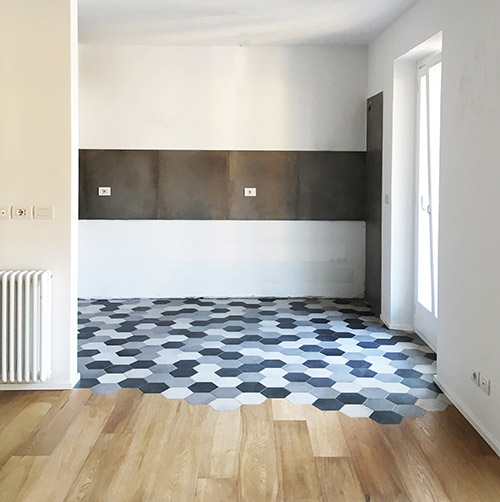
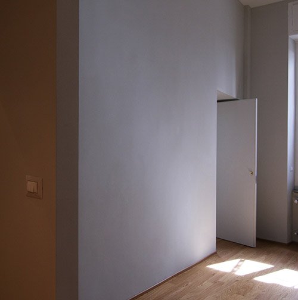

MATTIA NEBIOLO ARCHITETTO
HOME
(current)
PROGETTI
SERVIZI
CONTATTO
matnebiolo@gmail.com
+39 320 022 1651
Via Piffetti 36, Torino, ITALIA
PROGETTI
Patio Urbano
Casa Slataper
Casa Domodossola
Casa Porta Palazzo
Casa Vassalli Eandi

Casa Madama Cristina

Casa San Donato
Casa Collegno
Recupero Sottotetto
SERVIZI
Studi di fattibilità
Progettazione architettonica (preliminare, definitivo ed esecutivo)
Descrizione lavori, computi metrici, capitolati d'appalto
Progettazione di interni (distribuzione interna degli spazi; supporto per la scelta di materiali per finiture, arredi, colori; restyling di spazi abitativi)
Rendering di interni ed esterni
Pratiche edilizie
Direzione lavori e direzione artistica
Abbattimento delle barriere architettoniche
Schede catastali
Tabelle millesimali
Perizie